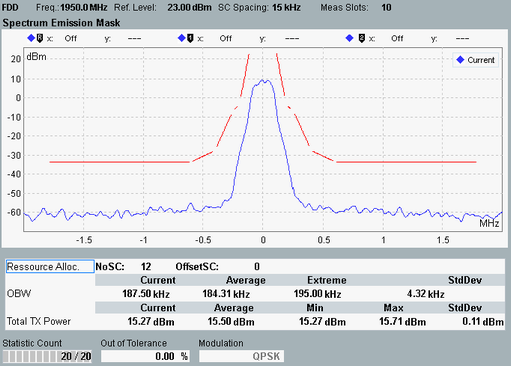
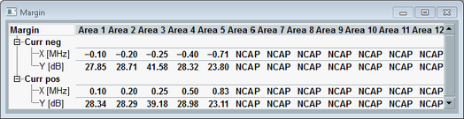

The spectrum emission mask results are displayed in a diagram and as a table of statistical results. Additional margin results can be shown/hidden via hotkey.

The measurement covers a symmetric frequency range of 4 MHz around the carrier center frequency.
According to 3GPP TS 36.521, the measurement must be carried out at maximum output power of the UE.
See also "Spectrum Emission Mask".
To show/hide the margin results, use the softkey - hotkey combination "Display" - "Margin On | Off".

A margin indicates the vertical distance between the spectrum emission mask limit line and a trace. For each emission mask area, the margin represents the "worst" value, i.e. the minimum determined for the frequencies of the area:
Margin = minimum (P(f)mask - P(f)trace)
A negative margin indicates that the trace is located above the limit line, i.e. the limit is exceeded.
The margin result display presents for each active area an "X [MHz]" and a "Y [dB]" value, for negative ("neg") and positive ("pos") offset frequencies. The Y value indicates the margin (worst value within area). The X value indicates the frequency offset at which the margin value was found. These frequency offsets are indicated relative to the center frequency.
The screenshot above shows margin results for the current trace. Corresponding margin results are displayed for all active traces (current, average, maximum trace). In this context, "Average" means "margins for average trace" and not "average values of margins for current trace". "Minimum" means "margins for maximum trace" (resulting in minimum margins).
The "Total TX Power" in the table indicates the TX power measured in the frequency domain within 400 kHz around the carrier center frequency. For other table results, see "View TX Measurement".
For the parameters at the bottom, see "Common View Elements".
For query of the spectrum emission mask results via remote control, see "Spectrum Emission Results".